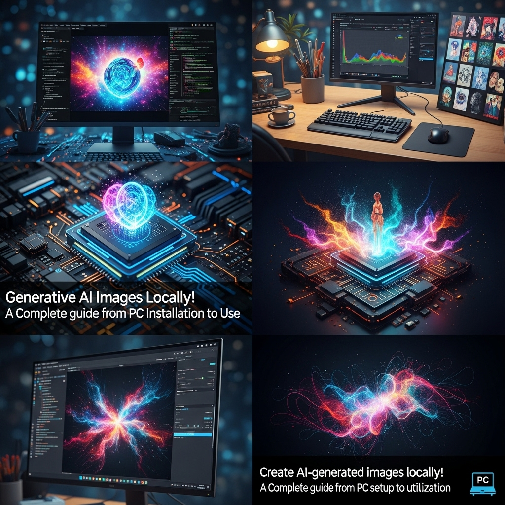
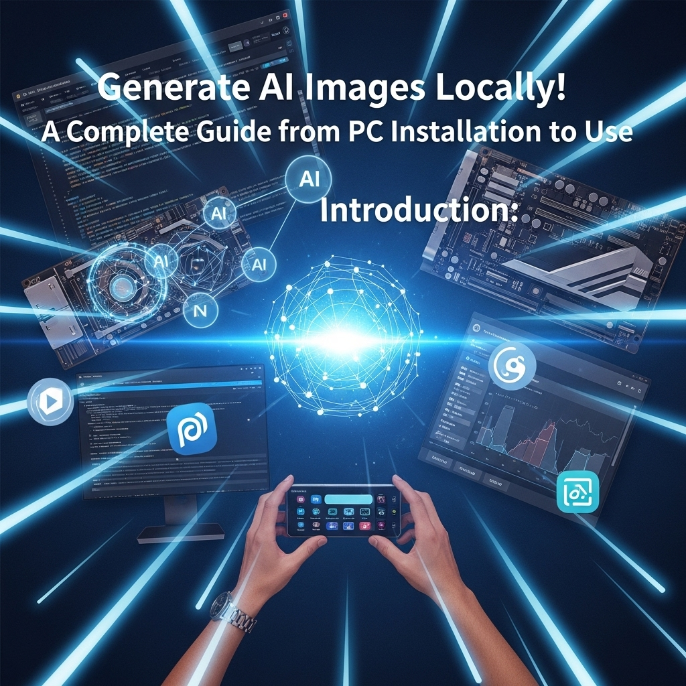
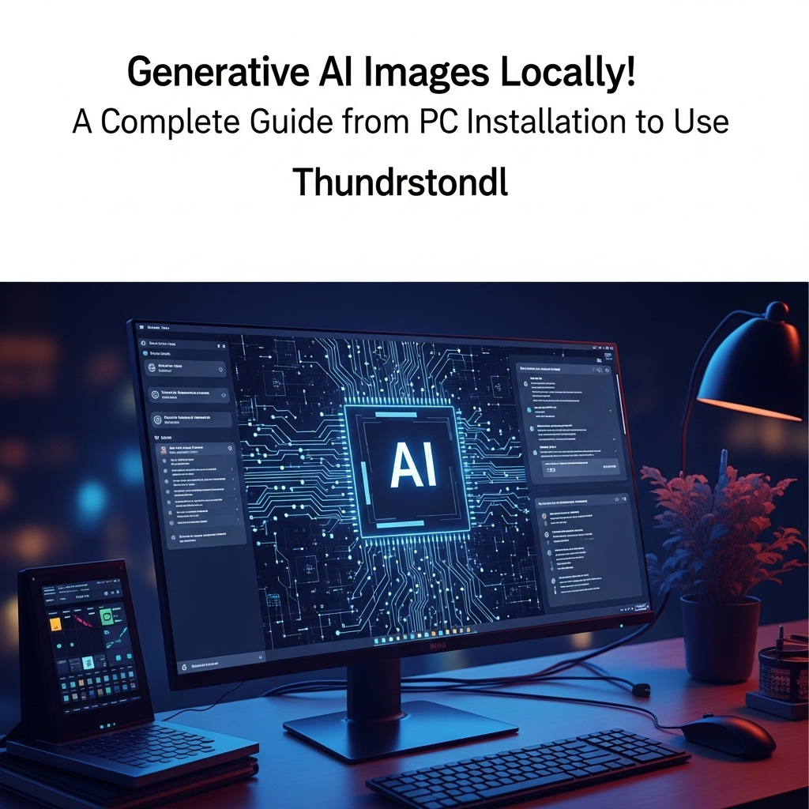
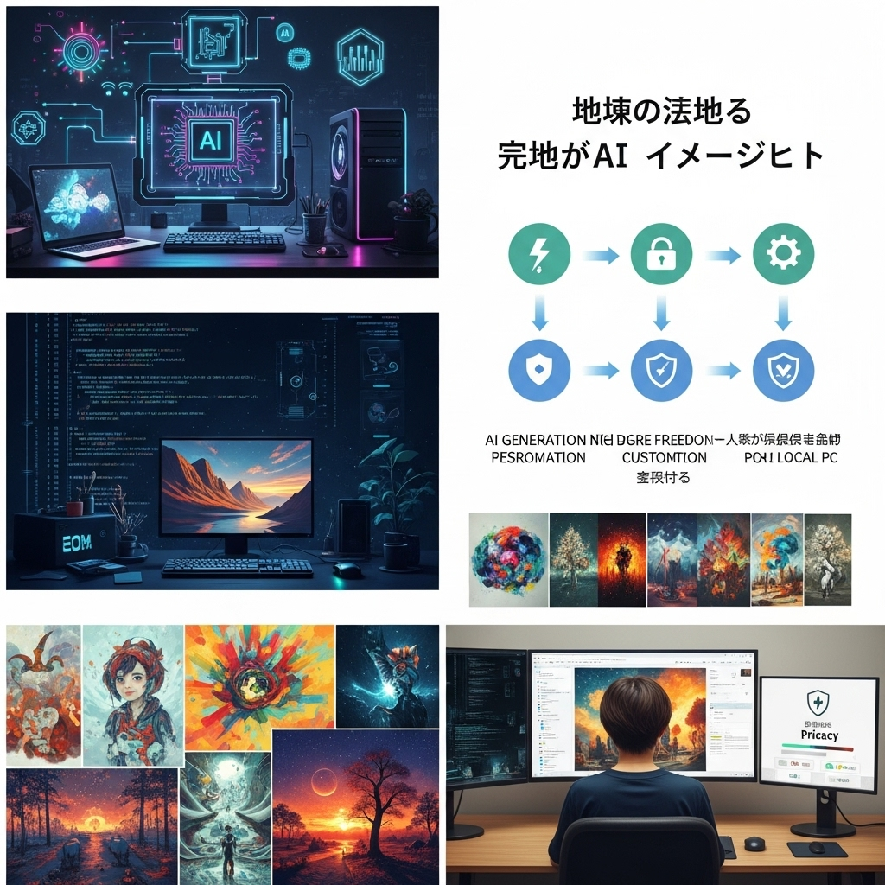
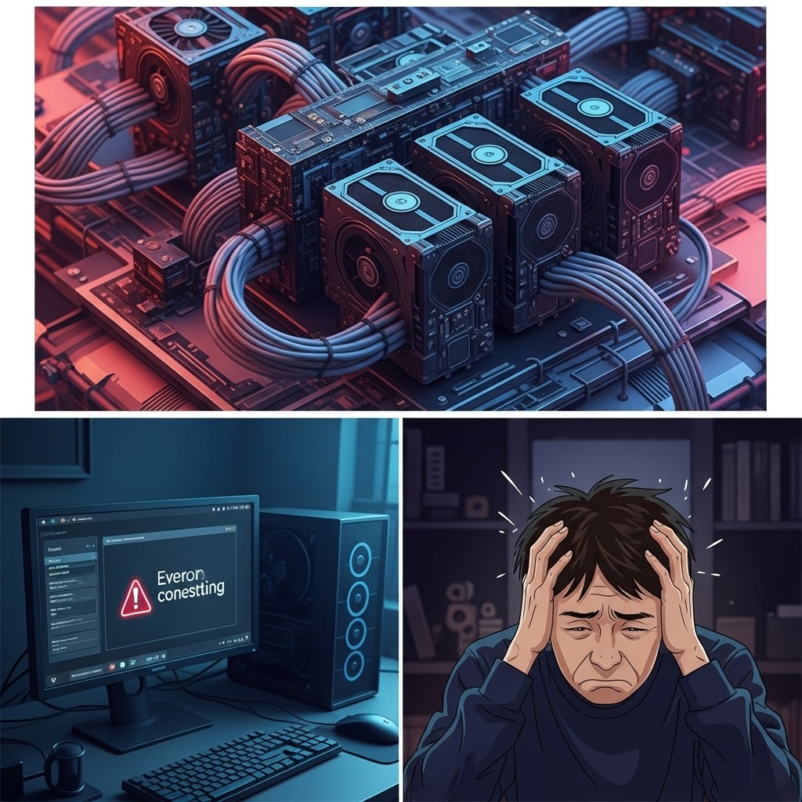
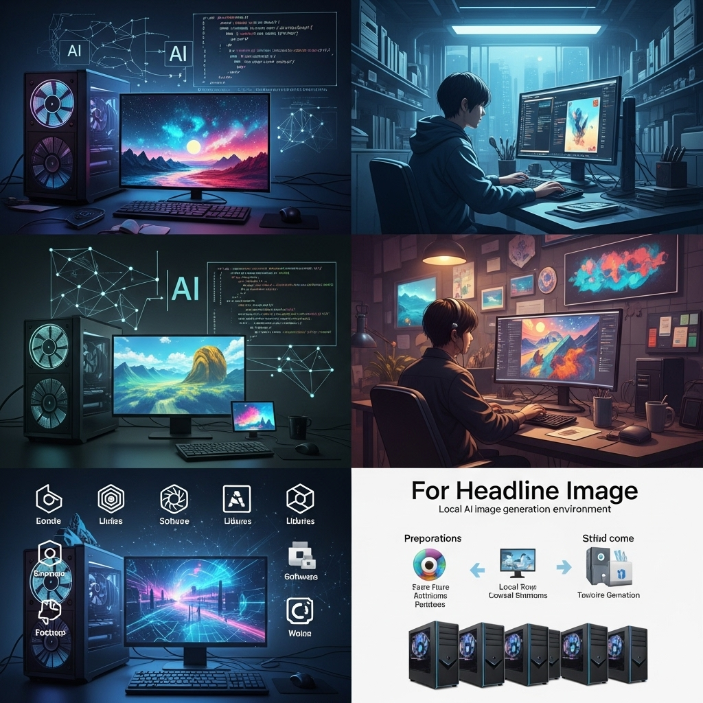
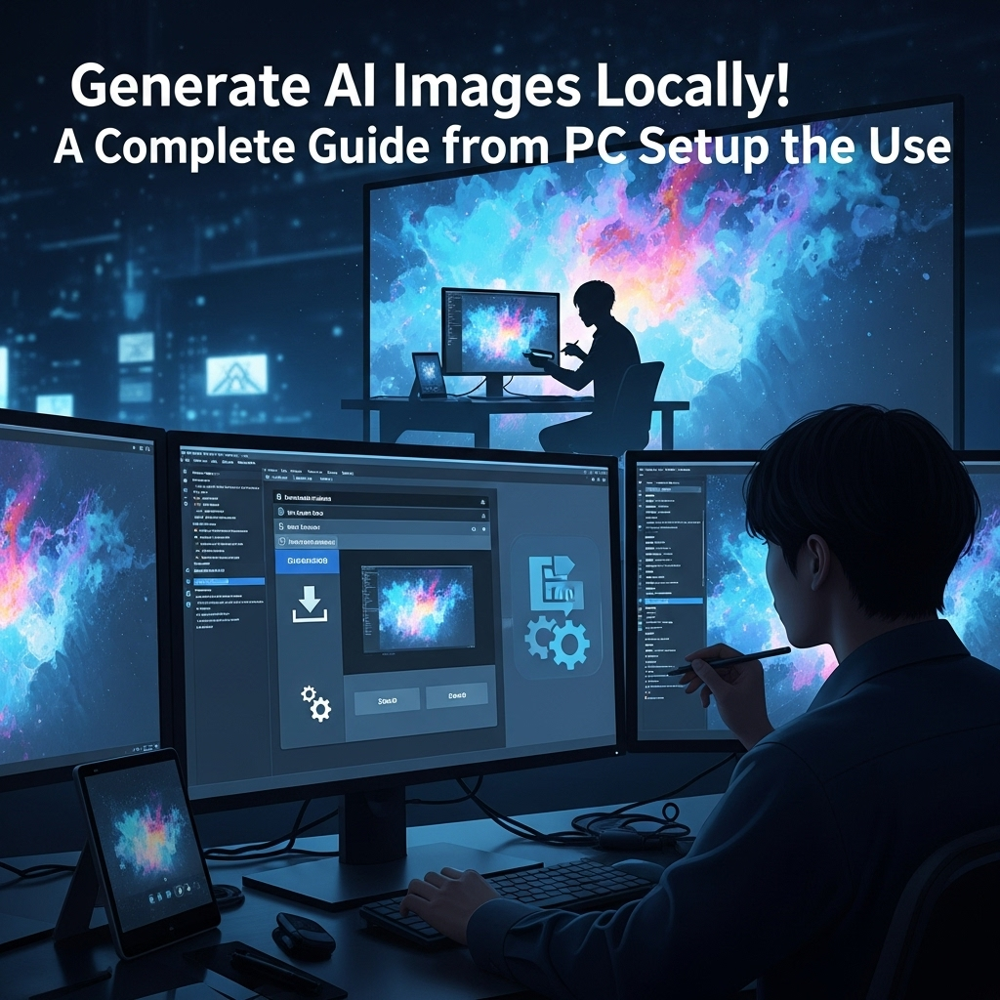
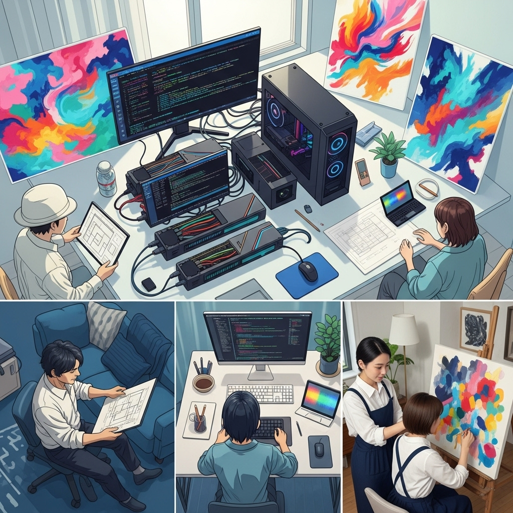
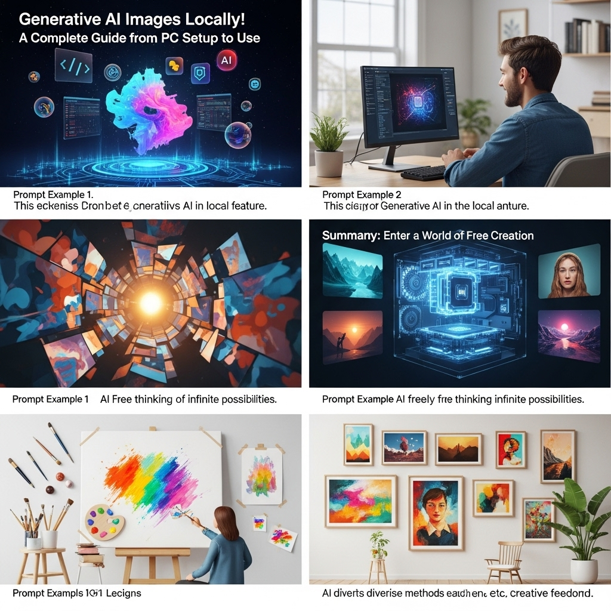

生成AI画像をローカルで！PC導入から活用まで完全ガイド

導入

近年、AI技術の進化は目覚ましく、私たちの生活やクリエイティブ活動に大きな変革をもたらしています。特に「生成AI」と呼ばれる技術は、テキストから画像を生成したり、既存の画像を加工したりする能力を持ち、その可能性に多くの人々が魅了されています。インターネット上には、手軽にAI画像生成を体験できるクラウドサービスが多数存在し、その手軽さから急速に普及しました。しかし、そうしたサービスを利用する中で、「もっと自由に、もっと深くAIと向き合いたい」「自分のPCで、誰にも邪魔されずに、心ゆくまで創作を楽しみたい」と感じる方も少なくないのではないでしょうか。
この記事では、まさにそんなあなたの願いを叶えるためのガイドとなります。クラウドサービスとは一線を画し、ご自身のPC（ローカル環境）に生成AI画像を動かすための環境を構築し、それを最大限に活用する方法について、一つ一つ丁寧にご紹介していきます。ローカル環境でのAI画像生成は、少しばかり準備と手間が必要になるかもしれませんが、その先に広がるのは、無限とも言える自由な表現の世界です。コストの心配なく、プライバシーを気にすることなく、あなたのアイデアを形にする喜びを、ぜひこのガイドを通じて体験してください。
これから、ローカル環境でAI画像生成を行うことの魅力から始まり、必要なPCスペック、具体的なツールの導入方法、そして生成した画像をさらに魅力的にするための活用術まで、ステップバイステップで解説していきます。初心者の方でも安心して取り組めるよう、専門用語は分かりやすく、そして親しみやすい言葉で説明することを心がけました。さあ、一緒にクリエイティブな旅へと出発しましょう。あなたの想像力が、このガイドをきっかけに、新たな形となって輝き出すことを願っています。
生成AI画像をローカルで動かす魅力

生成AIによる画像作成は、今や多くのクリエイターや趣味を持つ人々にとって、欠かせないツールの一つとなりつつあります。しかし、その利用形態は多岐にわたり、特に「クラウドサービス」と「ローカル環境」という二つの選択肢が主要なものとして挙げられます。ここでは、なぜ今、多くの人々が自身のPCでAIを動かす「ローカル環境」に注目し、その魅力に惹かれているのかを深く掘り下げていきましょう。
ローカル環境での画像生成AIの基本
ローカル環境での画像生成AIとは、文字通り、インターネット上のサーバーではなく、ご自身のパソコンの中にAIモデルや関連ソフトウェアをインストールし、そのPCの計算資源（主にGPU）を使って画像を生成する方式を指します。クラウドサービスが、インターネット越しに高性能なサーバーを借りてAIを動かすのに対し、ローカル環境では、すべてがあなたのPC内で完結します。
この方式の最も基本的な特徴は、AIモデル自体があなたのPC上に存在し、画像生成の処理もすべてPC内で行われる点にあります。例えば、Stable Diffusionという有名な画像生成AIがあります。これをローカル環境で動かす場合、Stable Diffusionのプログラムや、画像を生成するための「モデル」と呼ばれる巨大なデータファイル（数GBから数十GBに及ぶこともあります）を、あなたのPCのストレージに保存します。そして、画像生成の指示（プロンプト）を入力すると、PCのグラフィックボード（GPU）がその指示を解釈し、モデルを使って新しい画像を生成する、という流れになります。
この仕組みにより、インターネット接続の有無にかかわらず、いつでもどこでも画像生成が可能になります。また、生成された画像データは直接あなたのPCに保存されるため、外部にデータが流出する心配もありません。これは、特に機密性の高い画像を扱いたい場合や、プライバシーを重視するクリエイターにとって、非常に大きな安心感をもたらします。
さらに、ローカル環境では、AIモデルやその設定、使用する拡張機能などを、ユーザー自身が自由にカスタマイズできるという大きなメリットがあります。クラウドサービスでは提供されている機能やモデルに限定されることが多いですが、ローカル環境では、世界中のクリエイターが開発・公開している様々なモデルやツールを自由に導入し、自分だけの最適な環境を構築することが可能です。これは、まさに「自分だけのAI工房」を手に入れるようなものであり、表現の幅を無限に広げる可能性を秘めていると言えるでしょう。
なぜ今、ローカル環境が注目されるのか
ローカル環境でのAI画像生成が今、これほどまでに注目を集めているのには、いくつかの明確な理由があります。
まず第一に挙げられるのは、技術の進化とアクセシビリティの向上です。数年前まで、AIモデルをローカルで動かすには、非常に専門的な知識と高価な機材が必要でした。しかし、近年ではStable Diffusionのような高性能なモデルがオープンソースで公開され、さらに「Stable Diffusion WebUI（AUTOMATIC1111版）」のような、直感的で使いやすいインターフェースを持つツールが開発されたことで、一般のユーザーでも比較的容易に導入・利用できるようになりました。高性能なGPUを搭載したPCが普及したことも、この流れを後押ししています。
次に、クリエイティブな自由度とコントロールの欲求の高まりです。クラウドサービスは手軽である反面、利用規約やコンテンツポリシーによって生成できる画像に制限があったり、利用料金がかかったりすることがあります。また、使用できるモデルや機能も、サービス提供者が用意したものに限られます。しかし、ローカル環境であれば、そうした制約から解放され、自身の倫理観と責任のもと、あらゆる表現に挑戦することができます。これは、プロのクリエイターはもちろん、趣味で作品を作る人々にとっても、非常に魅力的なポイントです。自分だけのモデルを学習させたり、細かな設定を調整したりすることで、より自身のイメージに近い画像を追求できるため、クリエイティブな探求心が刺激されます。
さらに、データプライバシーとセキュリティへの意識の向上も、ローカル環境への関心を高める要因となっています。生成AIに個人情報や機密性の高い情報を入力することに抵抗を感じるユーザーは少なくありません。ローカル環境であれば、すべての処理がPC内で完結するため、データが外部のサーバーに送信される心配がありません。これにより、安心して機密性の高いプロジェクトに取り組んだり、個人的な写真などを活用した画像を生成したりすることが可能になります。
最後に、コミュニティの活発な活動と情報の共有も、ローカル環境の魅力を支えています。Stable DiffusionをはじめとするオープンソースのAIプロジェクトには、世界中の開発者やユーザーが集まる巨大なコミュニティが存在します。新しいモデル、拡張機能、効率的なプロンプトのテクニックなどが日々開発され、積極的に共有されています。これらの豊富なリソースを活用することで、ローカル環境ユーザーは常に最新の技術を取り入れ、自身のスキルを向上させることができます。困った時にも、コミュニティの力を借りて解決策を見つけやすいという点も、大きなメリットと言えるでしょう。
このように、ローカル環境でのAI画像生成は、技術的な進歩、クリエイティブな自由度、プライバシーへの配慮、そして活発なコミュニティの存在によって、今、最も注目されるAI活用法の一つとなっています。これらの魅力を知ることで、あなたもきっと、自分だけのAI工房を構築したくなるはずです。
ローカルAI画像生成のメリット

ローカル環境でAI画像生成を行うことは、多くの魅力と利点をもたらします。クラウドサービスにはない、独自のメリットを深く理解することで、あなたのクリエイティブ活動がより豊かで自由なものになるでしょう。ここでは、ローカルAI画像生成の主要なメリットを、一つずつ詳しく見ていきます。
メリット１．コストを抑えて画像生成が可能
AI画像生成に興味を持ち始めた方がまず気になるのは、やはり「コスト」ではないでしょうか。クラウドベースのAI画像生成サービスは、手軽に始められる反面、利用回数や生成する画像の品質、特定の機能の使用に対して料金が発生することがほとんどです。無料プランが用意されている場合もありますが、多くは生成枚数に上限があったり、生成速度が遅かったり、機能が制限されていたりと、本格的に利用しようとすると有料プランへの移行が必要になります。
しかし、ローカル環境でAI画像生成を行う場合、一度PC環境を構築してしまえば、基本的に追加の費用は発生しません。Stable Diffusionのような主要なAIモデルはオープンソースで公開されており、無料でダウンロードして利用できます。また、画像を生成するための「WebUI」と呼ばれるインターフェースも、無料で提供されています。
もちろん、ローカル環境の構築には、高性能なPC、特に強力なグラフィックボード（GPU）が必要となるため、初期投資としてPC本体やパーツの購入費用がかかります。しかし、この初期投資は一度行えば、その後は電気代を除いて、基本的にコストを気にすることなく、文字通り無制限に画像を生成し続けることができます。
例えば、クラウドサービスで1000枚の画像を生成するのに数千円から数万円かかる場合でも、ローカル環境であれば、PCの電気代と時間の許す限り、何枚でも生成が可能です。これは、特に試行錯誤を繰り返しながら理想の画像を追求したい方や、大量の画像を生成してコンテンツを作成したい方にとって、計り知れない経済的メリットとなります。
また、新しいモデルや拡張機能が登場した際も、ほとんどが無料で公開されるため、追加費用なしで最新のAI技術を体験し続けることができます。これにより、コストを気にすることなく、心ゆくまでAI画像生成の世界を探求し、自身のスキルと表現の幅を広げることが可能になるのです。初期投資は必要ですが、長期的に見れば、ローカル環境でのAI画像生成は最も経済的な選択肢と言えるでしょう。
メリット２．プライバシーとデータ管理の安心感
現代社会において、インターネットサービスを利用する上で、データプライバシーとセキュリティは最も重要な懸念事項の一つです。AI画像生成においても例外ではありません。クラウドベースのサービスを利用する場合、プロンプトとして入力したテキスト情報や、生成された画像データ、あるいは画像編集のためにアップロードした既存の画像データは、一度サービス提供者のサーバーに送信され、そこで処理されます。
このとき、多くのサービスは「入力データや生成データは、AIモデルの改善のために利用されることがある」という規約を設けています。これは、サービスの品質向上に役立つ一方で、ユーザーにとっては「自分のアイデアや、個人的な情報、あるいは機密性の高い画像が、意図しない形で利用されたり、外部に流出したりするのではないか」という不安につながることがあります。特に、未公開のプロジェクトに関するコンセプトアートや、個人を特定できるような写真、あるいはデリケートな内容の画像を扱いたい場合、この懸念は一層大きくなります。
しかし、ローカル環境でAI画像生成を行う場合、この問題は根本的に解決されます。なぜなら、すべての処理があなたのPC内で完結するからです。プロンプトの入力から画像の生成、そして保存に至るまで、データがインターネットを通じて外部のサーバーに送信されることは一切ありません。生成された画像データも、直接あなたのPCのストレージに保存されます。
これにより、あなたは以下のような大きな安心感を得ることができます。
- データ流出のリスクがない: あなたのアイデアや生成した画像、アップロードした画像が、第三者のサーバーに保存されたり、意図せず公開されたりする心配がありません。
- プライバシーの保護: 個人的な写真や機密性の高い情報をプロンプトとして使用したり、画像を生成したりする際も、そのデータが外部に漏れることはありません。
- 利用規約に縛られない: クラウドサービスのような、データ利用に関する複雑な利用規約やコンテンツポリシーを気にする必要がありません。自身の責任と倫理観のもと、自由にデータを扱うことができます。
- 完全なデータ管理: 生成された画像はあなたのPCに保存されるため、いつでも自由に管理、編集、削除が可能です。クラウドサービスのように、サービス終了に伴うデータ消失のリスクもありません。
このプライバシーとデータ管理の安心感は、特にプロのクリエイターや企業でAIを活用する際に非常に重要となります。未発表のゲームやアニメのキャラクターデザイン、製品のコンセプトアート、顧客向けのプレゼンテーション資料など、機密性の高い情報を含む画像を扱う場合でも、ローカル環境であれば安心して作業を進めることができます。
個人利用においても、家族写真をもとにしたアートワークの生成や、個人的な趣味のイラスト作成など、プライベートな内容を扱う際に、外部にデータが送信されないという安心感は非常に大きなメリットとなるでしょう。ローカルAI画像生成は、あなたのクリエイティブな活動に、揺るぎないセキュリティと自由なデータ管理の基盤を提供します。
メリット３．表現の自由度と高度なカスタマイズ
AI画像生成の魅力は、その表現の多様性にあります。しかし、クラウドサービスでは、提供されるモデルや機能が限定されがちで、ユーザーの表現の幅を狭めてしまうことがあります。これに対し、ローカル環境でのAI画像生成は、圧倒的な表現の自由度と高度なカスタマイズ性を提供します。これは、クリエイターにとって最もエキサイティングなメリットの一つと言えるでしょう。
ローカル環境では、以下の点で表現の自由度が飛躍的に向上します。
-
モデルの選択肢が無限大:
AI画像生成の核となるのは「モデル」です。モデルは、特定の画風や被写体、テーマに特化して学習されたAIの脳のようなもので、Stable Diffusionだけでも数えきれないほどの派生モデルが存在します。アニメ調、リアル系、水彩画風、油絵風、サイバーパンク、ファンタジーなど、あらゆるジャンルやスタイルに対応したモデルが、Hugging FaceやCivitaiといったコミュニティサイトで日々公開されています。
クラウドサービスでは、通常、限られた数のモデルしか選択できませんが、ローカル環境であれば、これらのあらゆるモデルを自由にダウンロードし、切り替えて使用することができます。これにより、あなたのイメージにぴったりの画風を見つけたり、複数のモデルを組み合わせて新たな表現を追求したりすることが可能になります。 -
LoRA（ローラの）やEmbedding（エンベディング）などの活用:
モデルだけでなく、LoRA（Low-Rank Adaptation of Large Language Models）やTextual Inversion（Embedding）といった軽量な追加学習ファイルも、ローカル環境の醍醐味です。LoRAは、特定のキャラクター、服装、ポーズ、画風などを学習させた追加ファイルで、ベースモデルと組み合わせることで、より細かく表現をコントロールできます。Embeddingも同様に、特定の概念やスタイルを少ないプロンプトで呼び出せるようにするものです。
これらのファイルを自由に導入し、組み合わせることで、「このキャラクターをこのポーズで、この服装で、この画風で描きたい」といった具体的なイメージを、より正確にAIに伝えることが可能になります。クラウドサービスでは、これらの細かいカスタマイズはほとんど不可能です。 -
豊富な拡張機能（Extensions）の利用:
Stable Diffusion WebUI（AUTOMATIC1111版）のようなツールには、画像生成の機能を大幅に拡張する「拡張機能」が多数存在します。例えば、ControlNetは、既存の画像からポーズや構図、線画などを抽出し、それを参照しながら画像を生成する画期的な機能です。これにより、「この写真の人物と同じポーズで、別のキャラクターを描きたい」といった、これまで難しかった表現が可能になります。
他にも、アップスケール（高解像度化）、インペイント（画像の一部修正）、アウトペイント（画像の外側を生成して拡張）、ADetailer（顔や手の品質向上）など、多種多様な拡張機能がコミュニティによって開発・公開されています。ローカル環境では、これらの拡張機能を自由に導入し、組み合わせることで、画像生成のワークフローを最適化し、表現の可能性を無限に広げることができます。 -
詳細なパラメータ設定と試行錯誤:
画像生成には、プロンプト以外にも、サンプリングメソッド、ステップ数、CFGスケール、シード値、解像度など、多数のパラメータが存在します。これらのパラメータを細かく調整することで、生成される画像の雰囲気やディテールが大きく変化します。
ローカル環境では、これらのすべてのパラメータを自由に設定し、何度でも試行錯誤を繰り返すことができます。クラウドサービスでは、一部のパラメータが固定されていたり、変更に制限があったりすることがありますが、ローカル環境であれば、納得がいくまで設定を調整し、理想の画像を追求することが可能です。
これらのカスタマイズ性と自由度は、単に画像を生成するだけでなく、AIを「自分だけのクリエイティブなパートナー」として育てる喜びにつながります。あなたの想像力が赴くままに、AIの可能性を最大限に引き出し、これまでにない表現を創造することができるでしょう。
メリット４．インターネット接続に依存しない
現代の生活においてインターネット接続は不可欠ですが、時にその安定性や可用性が問題となることがあります。特に、クリエイティブな作業や集中力を要するタスクに取り組む際、インターネット接続の不安定さや途絶は、作業効率を著しく低下させ、ストレスの原因にもなりかねません。クラウドベースのAI画像生成サービスは、その性質上、常に安定したインターネット接続が必須となります。接続が途切れてしまえば、作業は中断され、最悪の場合、それまでの進捗が失われる可能性もあります。
しかし、ローカル環境でAI画像生成を行う最大のメリットの一つは、インターネット接続に依存しないという点です。一度、必要なソフトウェア（Python、Gitなど）、AIモデル、WebUI、そして拡張機能をPCにインストールしてしまえば、それ以降の画像生成作業は、完全にオフラインで実行することが可能です。
この「インターネット接続に依存しない」という特性は、以下のような状況で特に大きな利点となります。
-
オフライン環境での作業:
出張先や旅行先、あるいは電波状況の悪い場所など、インターネット接続が不安定だったり、全く利用できなかったりする環境でも、あなたのPCがあればAI画像生成を続けることができます。カフェや公共交通機関の中、あるいは自宅で一時的にインターネット回線がダウンした際でも、作業が中断される心配がありません。これは、場所を選ばずにクリエイティブなインスピレーションを形にしたいクリエイターにとって、非常に心強い要素です。
-
安定した作業環境の確保:
インターネット回線の速度や安定性は、クラウドサービスを利用する際のボトルネックとなることがあります。回線が遅いと、プロンプトの送信や生成された画像のダウンロードに時間がかかり、作業のテンポが損なわれます。ローカル環境であれば、これらの通信による遅延は一切発生しません。すべての処理がPC内で高速に行われるため、よりスムーズでストレスフリーな画像生成体験が可能です。
-
通信コストの削減:
モバイルデータ通信や従量課金制のインターネット回線を利用している場合、クラウドサービスでの大量の画像生成やモデルのダウンロードは、予期せぬ通信コストを発生させる可能性があります。ローカル環境であれば、一度モデルなどをダウンロードしてしまえば、それ以降の画像生成で通信量はほとんど発生しません。これにより、通信コストを気にすることなく、心ゆくまでAI画像生成を楽しむことができます。
-
集中力の維持:
インターネットに接続されていると、つい他のウェブサイトを閲覧したり、通知に気を取られたりして、集中力が途切れがちになります。オフラインで作業することで、これらの誘惑から解放され、より深く画像生成に没頭し、クリエイティブなフロー状態を維持しやすくなります。
もちろん、新しいモデルや拡張機能のダウンロード、ソフトウェアのアップデートなど、一部の作業にはインターネット接続が必要となります。しかし、日常的な画像生成作業の大部分はオフラインで完結するため、インターネット環境に左右されずに、あなたのペースで、あなたの場所で、自由に創作活動を続けることができるのです。この自律性と柔軟性は、ローカルAI画像生成が提供する、非常に価値あるメリットと言えるでしょう。
ローカルAI画像生成のデメリット

ローカル環境でAI画像生成を行うことは、多くの魅力的なメリットがある一方で、いくつかのデメリットも存在します。これらのデメリットを事前に理解し、適切な準備と心構えを持つことで、スムーズにローカルAIの世界へ飛び込むことができるでしょう。ここでは、ローカルAI画像生成における主なデメリットについて、一つずつ詳しく解説していきます。
デメリット１．導入に必要なPCスペックと手間
ローカル環境でのAI画像生成を始めるにあたって、まず直面するのが「導入に必要なPCスペック」という壁と、それに伴う「手間」です。クラウドサービスのように、アカウントを作成してすぐに利用開始できる手軽さとは異なり、ローカル環境では、AIを動かすための物理的な準備とソフトウェアのセットアップが求められます。
PCスペックの要求
AIによる画像生成は、特に高度な計算処理を必要とするタスクであり、その中心となるのがグラフィックボード（GPU）です。GPUは、大量の並列計算を得意とするため、AIの学習や推論（画像生成）においてCPUよりもはるかに高い性能を発揮します。そのため、ローカルでAI画像生成を行うには、高性能なGPUを搭載したPCが不可欠となります。
具体的には、NVIDIA製のGeForce RTXシリーズ（RTX 3060以上、推奨はRTX 3080、RTX 4070以上）が一般的です。AMD製のGPUでも利用は可能ですが、NVIDIAのCUDAという技術がAI開発で広く使われているため、NVIDIA製の方が安定性や情報量の面で優位性があります。
GPUの性能だけでなく、VRAM（ビデオメモリ）の容量も非常に重要です。VRAMは、画像生成時に一時的にデータを保持するメモリであり、生成する画像の解像度や複雑さ、使用するモデルの種類、複数の画像を同時に生成するバッチサイズなどに直接影響します。VRAMが不足すると、画像生成ができなかったり、非常に遅くなったり、エラーが発生したりします。最低でも8GB、快適に利用するためには12GB以上、より高度な利用を目指すなら16GB以上が推奨されます。
さらに、メインメモリ（RAM）も16GB以上、できれば32GB以上あると安心です。ストレージ（SSD）も、AIモデルファイルが非常に大きいため（一つあたり数GB〜数十GB）、500GB以上の空き容量がある高速なSSDが望ましいです。OSや他のアプリケーションとは別に、AI関連ファイル専用のドライブを用意できると理想的です。
これらの要件を満たすPCは、一般的に安価ではありません。すでにハイスペックなゲーミングPCを持っている方であれば問題ありませんが、新たにPCを購入したり、既存のPCをアップグレードしたりするとなると、数十万円単位の初期投資が必要になることがあります。この初期投資は、ローカルAI画像生成を始める上での大きなハードルとなるでしょう。
導入の手間と専門知識
PCスペックの問題だけでなく、導入にはある程度の「手間」と、基本的なPC操作やコマンドラインに関する「専門知識」が求められます。
ローカル環境を構築する主なステップは以下の通りです。
- 必要なソフトウェアのインストール: Python、Git、CUDA（NVIDIA GPUの場合）などの開発環境をPCにインストールする必要があります。これらのソフトウェアは、バージョン管理やパス設定など、初心者には少し複雑に感じられるかもしれません。
- WebUIのダウンロードと設定: Stable Diffusion WebUI（AUTOMATIC1111版が主流）をGitを使ってダウンロードし、初期設定を行います。これには、環境変数の設定や、VRAM最適化のための起動オプションの追加など、テキストファイルを編集する作業が含まれます。
- AIモデルのダウンロード: 生成したい画像のスタイルに合わせたAIモデルファイルを、Hugging FaceやCivitaiといったサイトからダウンロードし、適切なフォルダに配置します。モデルファイルは巨大なため、ダウンロードにも時間がかかります。
- 拡張機能の導入: ControlNetやADetailerなど、便利な拡張機能を追加導入する際も、WebUIのインターフェースから簡単に行えるものもあれば、手動でファイルを配置したり、Gitコマンドを使ったりする必要がある場合もあります。
これらの手順は、PCの基本的な仕組みやファイル操作、コマンドラインの概念に慣れていない方にとっては、少し敷居が高く感じられるかもしれません。特に、途中でエラーが発生した場合、その原因を特定し、解決するためには、インターネットで情報を検索したり、コミュニティに質問したりといった自己解決能力が求められます。
もちろん、詳細な導入ガイドや動画チュートリアルも豊富に存在しますが、それらを読み解き、自身の環境に合わせて適用していく作業は、ある程度の時間と忍耐力を必要とします。
このように、ローカルAI画像生成は、高性能なPCへの初期投資と、導入・設定にかかる手間という二つの大きなデメリットを抱えています。しかし、これらのハードルを乗り越えた先には、コストを気にせず、プライバシーを守りながら、無限の表現を追求できる自由な世界が待っています。このメリットとデメリットを天秤にかけ、ご自身の状況に合った選択をすることが重要です。
デメリット２．最新情報のキャッチアップが必要
AI技術の進化は非常に速く、特に生成AIの分野では、毎日のように新しいモデル、新しい技術、新しいツール、そして新しいテクニックが登場しています。クラウドサービスを利用している場合、これらの最新情報はサービス提供者側が自動的に取り込み、ユーザーは特に意識することなく最新の機能を利用できることが多いです。しかし、ローカル環境でAI画像生成を行う場合、この「最新情報のキャッチアップ」が、ユーザー自身の責任と労力に委ねられるというデメリットがあります。
絶え間ない情報更新の波
Stable Diffusion WebUI（AUTOMATIC1111版）のようなツールは、オープンソースプロジェクトとして活発に開発が進められています。これは、常に機能が改善され、バグが修正され、新しい機能が追加されるというメリットがある一方で、ユーザー側もそれに合わせて環境を更新していく必要があります。
- WebUI本体のアップデート: 新機能の追加やパフォーマンス改善のため、WebUI本体のアップデートが頻繁に行われます。アップデートを怠ると、新しいモデルが正常に動作しなかったり、最新の拡張機能が利用できなかったりする可能性があります。アップデート作業自体は比較的簡単ですが、定期的に行う意識が必要です。
- AIモデルの多様化と進化: 画像生成の品質や表現力を左右するAIモデルは、日々新しいものが公開されています。より高品質な画像、特定の画風に特化したモデル、特定のキャラクターやアイテムを生成するためのLoRAなど、その種類は膨大です。これらの最新モデルを試すためには、自分でダウンロードし、適切な場所に配置する必要があります。どのモデルが自分の目的に合っているのか、どのモデルが今注目されているのかを常にチェックし続ける必要があります。
- 拡張機能の登場と更新: ControlNet、ADetailer、Segment Anythingなど、画像生成のワークフローを劇的に改善する拡張機能も、次々と登場し、既存の機能も頻繁に更新されます。これらの拡張機能を活用することで、表現の幅が大きく広がりますが、導入方法や設定方法を学び、自身の環境に適用していく手間がかかります。
- プロンプトエンジニアリングの進化: より効果的なプロンプトの記述方法や、特定の表現を引き出すためのテクニックも、コミュニティの中で日々研究され、共有されています。これらの最新のプロンプトテクニックを学ぶことで、生成画像の品質を向上させることができますが、そのためには積極的に情報を収集し、実践していく必要があります。
情報収集と学習の必要性
これらの最新情報をキャッチアップするためには、ユーザー自身が積極的に情報収集を行う必要があります。
- コミュニティサイトの巡回: CivitaiやHugging Faceのようなモデル共有サイト、GitHubのリポジトリ、Redditのサブレディット、Discordのサーバー、X（旧Twitter）のハッシュタグなどを定期的にチェックし、最新の動向を把握する必要があります。
- チュートリアルや解説記事の学習: 新しい機能やツールの使い方、プロンプトのテクニックなどを学ぶために、ブログ記事やYouTubeの解説動画などを参照し、学習する時間が必要です。
- 試行錯誤と実践: 得た知識を実際に自身の環境で試し、どのような効果があるのか、どのようにすればより良い結果が得られるのかを、自らの手で試行錯誤する過程も不可欠です。
この絶え間ない学習と情報収集は、AI技術への深い理解を促し、クリエイティブなスキルを向上させるというプラスの側面もあります。しかし、一方で、常に新しい情報に追われ、環境を最新の状態に保つための時間と労力が必要となることは、特に忙しい方にとっては負担となる可能性があります。
「せっかく環境を構築したのに、情報が古くなって使いこなせない」「新しいモデルが出たけど、導入方法がわからず試せない」といった状況に陥らないためには、ある程度の時間と学習意欲を持ち、積極的に情報に触れ続ける姿勢が求められます。この「最新情報のキャッチアップ」は、ローカルAI画像生成の自由と引き換えに求められる、重要な責任と言えるでしょう。
デメリット３．トラブルシューティングは自己責任
ローカル環境でのAI画像生成は、自由度が高い反面、何か問題が発生した際の「トラブルシューティングが自己責任」となる点が大きなデメリットとして挙げられます。クラウドサービスであれば、サービス提供元が技術的なサポートを提供してくれるため、困ったことがあれば問い合わせて解決策を得られます。しかし、ローカル環境では、基本的にすべて自分で解決策を見つけ出す必要があります。
発生しうる様々なトラブル
ローカル環境でのAI画像生成において、発生しうるトラブルは多岐にわたります。
-
環境構築時のエラー:
- Pythonのバージョンが合わない、パスが通っていない。
- Gitのクローンに失敗する。
- CUDAのバージョンがGPUドライバーと合わない。
- WebUIの起動スクリプト（
webui-user.batなど）の設定ミス。 - 必要なライブラリのインストールに失敗する。
-
画像生成時のエラー:
- VRAM不足によるメモリエラー（
CUDA out of memoryなど）。 - モデルファイルが破損している、または互換性がない。
- 拡張機能の競合や不具合。
- 特定のプロンプトや設定でWebUIがクラッシュする。
- 生成される画像が真っ黒になる、または意図しない内容になる。
- VRAM不足によるメモリエラー（
-
パフォーマンスの問題:
- 画像生成速度が極端に遅い。
- WebUIの動作が重い、フリーズする。
- PC全体が不安定になる。
-
アップデート時の問題:
- WebUIや拡張機能のアップデート後に、以前は動いていた機能が動かなくなる。
- アップデートが原因で、新たなエラーが発生する。
これらのトラブルは、PCの構成、OSのバージョン、インストールされている他のソフトウェア、ドライバーの状態など、様々な要因によって引き起こされるため、原因の特定が難しい場合があります。
自己解決能力と情報検索スキルが不可欠
トラブルが発生した際、頼れるのは基本的に自分自身と、インターネット上の情報、そしてコミュニティの力です。そのため、以下の能力が不可欠となります。
-
エラーメッセージの読解力:
WebUIのコンソール画面に表示されるエラーメッセージは、トラブルの原因を特定するための重要な手がかりです。英語で表示されることが多いため、ある程度の読解力や、翻訳ツールを活用する能力が求められます。エラーメッセージを正確に理解し、その内容に基づいて対処法を考えることが、解決への第一歩です。
-
情報検索スキル:
発生したエラーメッセージや現象をキーワードに、Googleなどの検索エンジンで情報を検索するスキルは非常に重要です。GitHubのIssueページ、Stack Overflow、Reddit、日本の技術ブログやQ&Aサイトなど、様々な情報源から解決策を探し出す必要があります。同じような問題に直面した他のユーザーの報告や、それに対する解決策が、多くの場合見つかります。
-
コミュニティへの質問:
どうしても解決策が見つからない場合は、DiscordのAI関連コミュニティや、X（旧Twitter）などのSNSで、具体的なエラーメッセージや状況を添えて質問することも有効です。ただし、質問の仕方も重要で、丁寧かつ具体的に状況を説明することで、より的確なアドバイスを得やすくなります。
-
試行錯誤と忍耐力:
一つの解決策がうまくいかなくても諦めず、様々な方法を試す忍耐力も求められます。設定を変更したり、別のモデルを試したり、拡張機能を一時的に無効にしたりと、地道な試行錯誤が必要になることも少なくありません。
この「トラブルシューティングは自己責任」という側面は、ローカルAI画像生成の学習曲線の一部とも言えます。しかし、これらの課題を乗り越えることで、あなたはAI技術だけでなく、PCの仕組みや問題解決能力についても深く学ぶことができます。それは、単に画像を生成する以上の、貴重な経験となるでしょう。最初からすべてを完璧に理解する必要はありません。一つずつ問題を解決していく過程も、ローカルAI画像生成の醍醐味として捉えることで、より楽しく取り組めるはずです。
ローカルAI画像生成の準備

ローカル環境でAI画像生成を始めるためには、まずご自身のPC環境を整えることが最も重要です。適切な準備を行うことで、その後の導入や活用がスムーズに進み、快適なAI画像生成ライフを送ることができます。ここでは、導入に必要なPCスペックと、事前に準備しておくべきソフトウェアについて、詳しく解説していきます。
準備１．必要なPCスペックと推奨環境
AIによる画像生成は、PCにとって非常に負荷の高い処理です。特にグラフィックボード（GPU）の性能が、生成速度や生成可能な画像の解像度、複雑さに直結します。ここでは、ローカルAI画像生成を快適に行うための、具体的なPCスペックと推奨環境について詳しく見ていきましょう。
１．グラフィックボード（GPU）
AI画像生成の最も重要な要素がGPUです。GPUは、大量の並列計算を高速で行うことに特化しており、AIの推論（画像を生成するプロセス）においてCPUよりも圧倒的な性能を発揮します。
-
推奨メーカー:
- NVIDIA製GPU（GeForce RTXシリーズ）: ほとんどのAIモデルやツールはNVIDIAのCUDA（Compute Unified Device Architecture）という並列計算プラットフォームに最適化されています。そのため、NVIDIA製GPUが最も推奨され、情報も豊富です。
- AMD製GPUも利用は可能ですが、NVIDIA製に比べて情報が少なく、設定が複雑になる場合があります。
-
VRAM（ビデオメモリ）容量:
VRAMは、画像生成時に一時的にデータを保持するGPU専用のメモリです。この容量が、生成できる画像のサイズ（解像度）や、一度に生成できる枚数（バッチサイズ）、使用できるモデルの種類（特に大規模なモデル）に直接影響します。
- 最低ライン: 8GB。このVRAM容量であれば、小〜中サイズの画像を生成したり、VRAM最適化設定（
--medvramや--lowvramオプション）を使用したりすることで、Stable Diffusion WebUIを動かすことは可能です。しかし、高解像度画像や複雑なモデルの利用には制限があります。 - 快適な利用: 12GB〜16GB。この範囲のVRAMがあれば、ほとんどのモデルを快適に利用でき、高解像度の画像生成や、ControlNetなどの高度な拡張機能も問題なく扱えるようになります。特にRTX 3080 (10GB/12GB), RTX 3060 (12GB), RTX 4070 (12GB) あたりがコストパフォーマンスに優れる選択肢となります。
- プロフェッショナル/最先端: 24GB以上。RTX 3090, RTX 4090などのハイエンドモデルは、超高解像度画像生成、複数のAIモデルの同時利用、独自のモデル学習など、最も高度な利用に対応できます。
- 最低ライン: 8GB。このVRAM容量であれば、小〜中サイズの画像を生成したり、VRAM最適化設定（
-
GPU性能（世代）:
VRAM容量だけでなく、GPUの世代も重要です。新しい世代のGPUほど、同じVRAM容量でも処理性能が高く、画像生成速度が向上します。
- 最低ライン: GeForce RTX 20シリーズ（例: RTX 2060 12GB）
- 推奨: GeForce RTX 30シリーズ（例: RTX 3060 12GB, RTX 3080 10GB/12GB）
- 最適: GeForce RTX 40シリーズ（例: RTX 4070 12GB, RTX 4080 16GB, RTX 4090 24GB）
２．CPU（プロセッサ）
GPUほど重要ではありませんが、CPUもAIモデルのロードや、WebUIの動作、生成された画像の保存などに関わります。
- 推奨: Intel Core i5/Ryzen 5以上のミドルレンジクラスであれば十分です。最新世代であればCore i3/Ryzen 3でも問題ない場合が多いです。
３．メインメモリ（RAM）
AIモデルのロードや、OS、その他のアプリケーションの動作に必要です。VRAMが不足した場合に、メインメモリが補助的に使われることもあります（ただし、速度は大幅に低下します）。
- 最低ライン: 16GB。
- 推奨: 32GB。複数のWebUIを同時に起動したり、他のアプリケーションと併用したりする場合に快適です。
４．ストレージ（SSD）
AIモデルファイルは非常に大きく、一つあたり数GBから数十GBに及びます。複数のモデルやLoRA、拡張機能を導入すると、あっという間に数百GBを消費します。また、WebUIの起動やモデルのロードには、高速な読み書き速度が求められます。
- 推奨: 1TB以上のNVMe SSD。OSや他のアプリケーションとは別に、AI関連ファイル専用のドライブを用意できると理想的です。500GBでも可能ですが、すぐに容量不足になる可能性があります。HDDは読み書き速度が遅く、AI画像生成には不向きです。
５．OS（オペレーティングシステム）
- 推奨: Windows 10またはWindows 11 (64ビット版)。ほとんどのガイドや情報がWindows向けに提供されています。
- Linux（Ubuntuなど）も利用可能ですが、導入はより専門的になります。macOSも、M1/M2/M3チップ搭載モデルであれば利用可能ですが、NVIDIA GPU搭載PCとは異なる導入手順が必要です。
まとめ
| パーツ | 最低ライン | 推奨環境 |
|---|---|---|
| GPU | NVIDIA GeForce RTX 20シリーズ (VRAM 8GB以上) | NVIDIA GeForce RTX 3060 (12GB) / RTX 3080 (10GB/12GB) / RTX 4070 (12GB) |
| VRAM | 8GB | 12GB〜16GB |
| CPU | Intel Core i5 / Ryzen 5 (第8世代以降) | Intel Core i7 / Ryzen 7 (最新世代) |
| RAM | 16GB | 32GB |
| ストレージ | 500GB NVMe SSD | 1TB以上のNVMe SSD |
| OS | Windows 10 (64bit) | Windows 11 (64bit) |
これらのスペックを満たすPCは、初期投資として決して安くはありません。しかし、一度環境を整えてしまえば、その後はコストを気にせず、無限にクリエイティブな活動を楽しむことができるようになります。ご自身の予算と目的に合わせて、最適なPC環境を検討してみてください。
準備２．導入前に準備するソフトウェア
ローカル環境でAI画像生成を行うためには、いくつかの基本的なソフトウェアをPCにインストールしておく必要があります。これらは、AIモデルを動かすための基盤となる環境を提供したり、WebUIを導入したりするために不可欠なツールです。一つずつ、その役割と準備方法を解説します。
１．Python（プログラミング言語）
Stable Diffusion WebUIをはじめとする多くのAI関連ツールは、Pythonというプログラミング言語で書かれています。そのため、WebUIを動かすには、Pythonの実行環境がPCにインストールされている必要があります。
- 役割: AIプログラムの実行環境を提供します。WebUIはPythonスクリプトとして動作します。
-
準備方法:
- Pythonの公式サイト（
python.org）にアクセスします。 - 「Downloads」セクションから、安定版の最新バージョン（通常はPython 3.10.xまたは3.11.xあたりが推奨されますが、WebUIの推奨バージョンを確認してください。記事執筆時点では3.10.xが推奨されることが多いです）のインストーラーをダウンロードします。Windows版であれば「Windows installer (64-bit)」を選びましょう。
- インストーラーを実行します。非常に重要な点として、インストール開始時に表示される「Add Python to PATH」のチェックボックスに必ずチェックを入れてください。 これにチェックを入れることで、コマンドプロンプトなどからPythonを簡単に実行できるようになります。
- 「Install Now」をクリックしてインストールを完了させます。
- インストール後、コマンドプロンプト（Windowsキー + Rで
cmdと入力してEnter）を開き、python --versionと入力してEnterキーを押します。インストールしたPythonのバージョンが表示されれば成功です。
- Pythonの公式サイト（
２．Git（バージョン管理システム）
Gitは、ソフトウェアのソースコードの変更履歴を管理するためのシステムです。Stable Diffusion WebUIのようなオープンソースプロジェクトは、Gitを使って開発されており、ユーザーもGitを使ってWebUIのファイルをダウンロードしたり、アップデートしたりします。
- 役割: WebUIのソースコードをGitHubからダウンロードしたり、最新版にアップデートしたりするために必要です。
-
準備方法:
- Gitの公式サイト（
git-scm.com）にアクセスします。 - 「Downloads」セクションから、ご自身のOS（Windows）用のインストーラーをダウンロードします。
- インストーラーを実行します。インストール中のオプションは、基本的にデフォルトのままで問題ありません。特にこだわりがなければ、そのまま「Next」をクリックして進めて構いません。
- インストール後、コマンドプロンプトを開き、
git --versionと入力してEnterキーを押します。Gitのバージョンが表示されれば成功です。
- Gitの公式サイト（
３．CUDA Toolkit（NVIDIA GPUユーザーのみ）
NVIDIA製GPUを搭載しているPCの場合、GPUの計算能力を最大限に引き出すために、NVIDIAが提供する「CUDA Toolkit」をインストールすることが推奨されます。これにより、AI画像生成の処理速度が大幅に向上します。
- 役割: NVIDIA製GPUの計算資源をAIプログラムが効率的に利用できるようにするための開発環境です。
-
準備方法:
- NVIDIAのCUDA Toolkitダウンロードページ（
developer.nvidia.com/cuda-downloads）にアクセスします。 - ご自身のOS（Windows）、アーキテクチャ（x86_64）、バージョン（Windows 10/11）、インストーラータイプ（
exe (local)が推奨）を選択します。 - 重要な注意点: CUDA Toolkitのバージョンは、ご自身のNVIDIA GPUドライバーのバージョンと互換性があるものを選ぶ必要があります。一般的には、最新のGPUドライバーをインストールしていれば、最新のCUDA Toolkitで問題ありませんが、もしエラーが発生する場合は、ドライバーとCUDA Toolkitの互換性を確認してください。
- ダウンロードしたインストーラーを実行します。インストール中のオプションは、通常「Express」インストールで問題ありません。
- インストール後、コマンドプロンプトで
nvcc --versionと入力してEnterキーを押します。CUDAのバージョン情報が表示されれば成功です。
- NVIDIAのCUDA Toolkitダウンロードページ（
４．GPUドライバーの最新化
GPUがAI画像生成で最高のパフォーマンスを発揮するためには、常に最新のドライバーがインストールされていることが重要です。
- 役割: GPUの性能を最大限に引き出し、安定した動作を保証します。
-
準備方法:
- NVIDIA GPUの場合: GeForce Experienceアプリを使用するか、NVIDIAの公式サイトから最新のGame Ready DriverまたはStudio Driverをダウンロードしてインストールします。AI画像生成には、特にStudio Driverが推奨される場合もありますが、Game Ready Driverでも問題ありません。
- AMD GPUの場合: AMD Software: Adrenalin Editionをインストールし、そこから最新ドライバーに更新します。
これらのソフトウェアを事前に準備し、正しくインストールしておくことで、Stable Diffusion WebUIの導入が格段にスムーズになります。一つ一つのステップを焦らず、丁寧に進めていくことが成功への鍵となります。
ローカルAI画像生成：ツールの導入

いよいよ、ローカルAI画像生成の中核となるツールの導入フェーズです。ここでは、最も広く利用されているStable Diffusion WebUI（AUTOMATIC1111版）を中心に、その概要から具体的な導入手順、そしてモデルや拡張機能の導入方法までを詳しく解説していきます。このステップを乗り越えれば、あなたも自分だけのAI工房を手に入れることができるでしょう。
導入１．StableDiffusionWebUIの概要
Stable Diffusion WebUI、特に「AUTOMATIC1111版」は、オープンソースの画像生成AIであるStable Diffusionを、より直感的で使いやすいウェブインターフェース（WebUI）で操作できるようにしたツールです。その多機能性と高いカスタマイズ性から、ローカルAI画像生成のデファクトスタンダード（事実上の標準）として、世界中のユーザーに利用されています。
Stable Diffusionとは？
まず、根本となる「Stable Diffusion」について簡単に説明します。Stable Diffusionは、Stability AI社が開発し、オープンソースで公開されている「潜在拡散モデル（Latent Diffusion Model）」ベースの画像生成AIです。テキスト（プロンプト）から画像を生成するText-to-Image機能だけでなく、既存の画像を元に新しい画像を生成するImage-to-Image、画像の一部を修正するInpainting、画像の外部を生成して拡張するOutpaintingなど、様々な機能を持っています。
その最大の特徴は、非常に高品質な画像を生成できる能力と、オープンソースであるため誰でも自由に利用・改変できる点にあります。このオープンソース性のおかげで、世界中の開発者やクリエイターが、Stable Diffusionを基盤として様々な派生モデルやツールを開発し、そのエコシステムを豊かにしています。
Stable Diffusion WebUI (AUTOMATIC1111版)とは？
Stable Diffusion WebUI (AUTOMATIC1111版)は、Stable Diffusionをコマンドラインからではなく、ウェブブラウザ上でグラフィカルに操作できるようにしたインターフェースです。開発者であるAUTOMATIC1111氏のGitHubリポジトリで公開されており、Pythonで記述されています。
このWebUIの登場により、専門的なプログラミング知識がないユーザーでも、Stable Diffusionの強力な機能を直感的に利用できるようになりました。その主な特徴は以下の通りです。
-
直感的なUI:
プロンプト入力欄、画像生成ボタン、各種パラメータ調整スライダーなどがブラウザ上に分かりやすく配置されており、マウス操作で簡単に画像生成ができます。生成された画像もその場で確認・保存できます。
-
豊富な機能:
Text-to-Image（txt2img）、Image-to-Image（img2img）、Inpainting、Outpainting、アップスケール（高解像度化）など、Stable Diffusionが持つ主要な機能のほぼすべてを網羅しています。
-
高度なカスタマイズ性:
- モデル管理: 複数のStable Diffusionモデル（Checkpoint, Safetensors形式）を簡単に切り替えて利用できます。
- LoRA/Embedding対応: 特定のキャラクター、画風、ポーズなどを学習させた軽量な追加学習ファイル（LoRA、Textual Inversion/Embedding）を導入し、画像生成に適用できます。
- 拡張機能（Extensions）: WebUIの機能をさらに拡張するプラグインシステムが充実しています。ControlNet（画像参照生成）、ADetailer（顔・手などの品質向上）、Dynamic Prompts（動的なプロンプト生成）など、多種多様な拡張機能がコミュニティから提供されており、ワンクリックで導入・管理が可能です。
-
活発なコミュニティと情報:
AUTOMATIC1111版WebUIは、その普及度から、世界中に非常に活発なユーザーコミュニティが存在します。導入方法、使い方、トラブルシューティング、新しいモデルや拡張機能の情報など、膨大なリソースがインターネット上に公開されており、困った時に助けを求めやすい環境です。
-
オープンソースと無料利用:
WebUI自体もオープンソースであり、無料で利用できます。これにより、コストを気にすることなく、最先端のAI画像生成技術を自身のPCで試すことが可能です。
Stable Diffusion WebUI (AUTOMATIC1111版)は、単なるインターフェースにとどまらず、ローカルAI画像生成を行う上で不可欠な「司令塔」とも言える存在です。このツールを導入し、使いこなすことが、あなたのクリエイティブな可能性を大きく広げる第一歩となるでしょう。
導入２．導入から基本設定までのステップ
Stable Diffusion WebUI (AUTOMATIC1111版)をあなたのPCに導入し、基本的な設定を行うまでの具体的なステップを解説します。事前にPython、Git、NVIDIA GPUドライバー（NVIDIAユーザーの場合）がインストールされていることを確認してください。
ステップ１：WebUIのダウンロード（クローン）
まず、Gitを使ってWebUIのソースコードをGitHubからあなたのPCにダウンロードします。
-
フォルダの作成:
AI関連ファイルを保存するための専用フォルダをPCのわかりやすい場所に作成します。例えば、
D:\StableDiffusionやC:\AI_Imagesなど、半角英数字のみのパスで、ドライブの直下に近い場所が推奨されます。日本語のパスやスペースを含むパスは、後々トラブルの原因となることがあるため避けてください。
例:D:\AI -
Git Bashの起動:
作成したフォルダ（例:
D:\AI）をエクスプローラーで開き、そのフォルダ内で右クリックします。表示されるメニューから「Git Bash Here」を選択します。コマンドプロンプトのような黒い画面が表示されます。 -
WebUIのクローン:
Git Bashの画面で、以下のコマンドを入力してEnterキーを押します。
git clone https://github.com/AUTOMATIC1111/stable-diffusion-webui.gitこれにより、
stable-diffusion-webuiというフォルダが作成され、その中にWebUIのプログラムファイルがダウンロードされます。ダウンロードには数分かかります。
ステップ２：WebUIの初回起動と必要なファイルのダウンロード
WebUIを初回起動すると、必要なPythonライブラリやStable Diffusionの基本的なモデル（v1-5-pruned-emaonly.safetensorsなど）が自動的にダウンロードされます。
-
WebUIフォルダへの移動:
Git Bashで、先ほどクローンした
stable-diffusion-webuiフォルダに移動します。cd stable-diffusion-webui -
起動スクリプトの実行:
Windowsの場合、
webui-user.batというバッチファイルを実行することでWebUIが起動します。./webui-user.batまたは、エクスプローラーで
stable-diffusion-webuiフォルダを開き、webui-user.batファイルをダブルクリックして実行することもできます。 -
初回ダウンロードの待機:
初回起動時には、必要なPythonライブラリ（PyTorchなど）やStable Diffusionの軽量モデルが自動的にダウンロード・インストールされます。これには、インターネット回線の速度やPCの性能にもよりますが、数十分から1時間以上かかる場合があります。途中でエラーが発生しなければ、焦らずに待ちましょう。
-
WebUIの起動とアクセス:
すべてのダウンロードとインストールが完了すると、コマンドプロンプト（またはGit Bash）の画面に、
Running on local URL: http://127.0.0.1:7860のようなURLが表示されます。これがWebUIにアクセスするためのアドレスです。
このURLをコピーし、お使いのウェブブラウザ（Chrome, Edgeなど）のアドレスバーに貼り付けてEnterキーを押します。
Stable Diffusion WebUIの画面が表示されれば、初回起動は成功です！
ステップ３：基本的な設定（webui-user.batの編集）
WebUIをより快適に、そして安定して利用するために、起動スクリプトであるwebui-user.batファイルを編集して、いくつかのオプションを追加することが推奨されます。
-
webui-user.batの編集:stable-diffusion-webuiフォルダ内にあるwebui-user.batファイルを右クリックし、「編集」を選択します（メモ帳などのテキストエディタで開きます）。 -
COMMANDLINE_ARGSの編集:ファイルの中に、
set COMMANDLINE_ARGS=という行があります。この行に、以下のオプションを追加します。-
VRAM最適化オプション:
GPUのVRAM容量が8GB〜12GB程度の場合、メモリ不足によるエラーを防ぐために、以下のオプションを追加することを強く推奨します。
set COMMANDLINE_ARGS=--medvramもし、それでもVRAM不足のエラーが出る場合や、さらにVRAM容量が少ない場合は、
--lowvramを試してください。set COMMANDLINE_ARGS=--lowvramVRAM容量が16GB以上ある場合は、特に指定しなくても良いですが、安定性を重視するなら
--medvramを追加しても良いでしょう。 -
WebUIの自動起動停止オプション:
毎回ブラウザでURLを入力するのが面倒な場合、WebUIが起動時に自動でブラウザを開くようにするオプションです。
set COMMANDLINE_ARGS=--autolaunch（例:
set COMMANDLINE_ARGS=--medvram --autolaunchのように、複数のオプションはスペースで区切って追加します） -
その他推奨オプション:
--xformers: 画像生成を高速化し、VRAM使用量を削減するオプション。ただし、別途xformersのインストールが必要な場合があります。--no-half-vae: VAE（後述）が正しく動作しない場合や、画像の色がおかしくなる場合に試すオプション。--theme dark: WebUIのテーマをダークモードに変更します。
-
VRAM最適化オプション:
-
ファイルの保存:
編集した
webui-user.batファイルを上書き保存します。 -
WebUIの再起動:
webui-user.batファイルを再度実行してWebUIを起動し直します。これで、新しい設定が適用されます。
これらのステップで、Stable Diffusion WebUIの導入と基本的な設定は完了です。次はいよいよ、画像を生成するための「モデル」を導入していきましょう。
導入３．モデルと拡張機能の選び方・導入法
Stable Diffusion WebUIを導入したら、次に必要となるのが、実際に画像を生成するための「モデル」と、機能を拡張する「拡張機能」です。これらを適切に選び、導入することで、あなたのAI画像生成の可能性は無限に広がります。
１．AIモデルの選び方と導入法
AIモデルは、画像生成AIの「脳」のようなもので、特定の画風や内容に特化して学習されています。Stable Diffusionには非常に多くの派生モデルが存在します。
-
モデルの種類:
-
Checkpoint/Safetensorsモデル:
Stable Diffusionのベースとなる大規模なモデルファイルです。
.ckptまたは.safetensorsという拡張子を持ち、通常2GB〜7GB程度のファイルサイズがあります。アニメ調、リアル系、油絵風など、様々な画風に特化したモデルが多数存在します。
例:Anything V5,ChilloutMix,MeinaMix,SDXL 1.0など。 -
LoRA (Low-Rank Adaptation of Large Language Models):
ベースモデルに特定の要素（キャラクター、服装、ポーズ、画風など）を追加で学習させた軽量なモデルファイルです。
.safetensors拡張子を持ち、通常10MB〜200MB程度と小さく、ベースモデルと組み合わせて使用します。LoRAを活用することで、より細かく表現をコントロールできます。 -
Textual Inversion (Embedding):
特定の概念（キャラクター、スタイル、ネガティブプロンプトなど）を短いテキストで表現できるように学習させた軽量なファイルです。
.ptまたは.safetensors拡張子を持ち、数MB程度と非常に小さいです。
-
Checkpoint/Safetensorsモデル:
-
モデルの選び方:
- 目的を明確にする: どのような画像を生成したいのか（アニメ、リアル、風景、キャラクターなど）によって、選ぶべきモデルは異なります。
-
コミュニティサイトの活用:
- Civitai (civitai.com): 最も人気のあるStable Diffusionモデル共有サイトです。様々なモデル、LoRA、Embeddingが公開されており、プレビュー画像や他のユーザーの生成例、推奨プロンプトなどが豊富に提供されています。
- Hugging Face (huggingface.co/models): 大規模なAIモデルのリポジトリです。最新のベースモデルや研究段階のモデルが多く公開されています。
- 人気や評価を参考にする: サイトでのダウンロード数、いいね数、コメントなどを参考に、人気のあるモデルや評価の高いモデルから試してみるのがおすすめです。
-
モデルの導入法:
- ダウンロード: CivitaiやHugging Faceから、使いたいモデルファイルをダウンロードします。ファイルサイズが大きいので、安定したインターネット環境で行いましょう。
-
配置: ダウンロードしたモデルファイルを、WebUIの所定のフォルダに配置します。
- Checkpoint/Safetensorsモデル:
stable-diffusion-webui/models/Stable-diffusionフォルダ - LoRAモデル:
stable-diffusion-webui/models/Loraフォルダ - Embeddingモデル:
stable-diffusion-webui/embeddingsフォルダ
- Checkpoint/Safetensorsモデル:
- WebUIでの選択: WebUIの画面左上にあるドロップダウンメニュー（Checkpoint/Safetensorsモデルの場合）や、「Show/hide extra networks」ボタン（LoRA/Embeddingの場合）から、導入したモデルを選択できるようになります。モデルを配置した後、WebUI画面右上の「🔄」ボタン（Reload UI）をクリックすると、新しいモデルがリストに表示されます。
２．拡張機能の選び方と導入法
拡張機能（Extensions）は、WebUIの機能をさらに強化し、画像生成の自由度や効率を大幅に向上させるプラグインです。
-
代表的な拡張機能:
- ControlNet: 既存の画像（ポーズ、線画、深度マップなど）を参照して画像を生成する機能。構図やポーズを細かくコントロールしたい場合に必須です。
- ADetailer: 生成された画像に写る顔や手の品質を自動的に向上させる機能。
- Dynamic Prompts: プロンプトにランダム性や条件分岐を導入し、多様な画像を効率的に生成する機能。
- Tiled Diffusion/VAE: 高解像度画像をVRAMを節約しながら生成する機能。
- Image Browser: 生成した画像をWebUI内で管理・閲覧できる機能。
-
拡張機能の選び方:
- 目的を明確にする: どのような機能を追加したいのか（ポーズ制御、顔の修正、高解像度化など）によって、必要な拡張機能は異なります。
- WebUIの「Extensions」タブ: WebUIの画面上部にある「Extensions」タブをクリックし、「Available」サブタブを開くと、GitHub上で公開されている多くの拡張機能がリストアップされます。説明や星の数（人気度）を参考に選びましょう。
- コミュニティの情報: YouTubeのチュートリアル動画やブログ記事などで、おすすめの拡張機能やその使い方に関する情報が豊富に提供されています。
-
拡張機能の導入法:
WebUI (AUTOMATIC1111版)では、拡張機能の導入が非常に簡単に行えます。
- 「Extensions」タブに移動: WebUIの画面上部にある「Extensions」タブをクリックします。
-
「Install from URL」または「Available」から導入:
- URLからインストール: 拡張機能のGitHubリポジトリのURLを知っている場合、「Install from URL」サブタブの「URL for extension's git repository」欄にそのURLを貼り付け、「Install」ボタンをクリックします。
- Availableリストからインストール: 「Available」サブタブをクリックし、「Load from」ボタンをクリックすると、利用可能な拡張機能のリストが表示されます。使いたい拡張機能の右側にある「Install」ボタンをクリックします。
- インストール完了後: 「Installed」サブタブに移動し、「Apply and restart UI」ボタンをクリックしてWebUIを再起動します。
- 確認: 再起動後、WebUIの画面に新しいタブやセクションとして拡張機能が追加されていることを確認します。例えばControlNetであれば、txt2imgタブの下部にControlNetのパネルが表示されます。
モデルと拡張機能は、あなたのAI画像生成の可能性を広げる両輪です。様々なモデルや拡張機能を試しながら、あなた自身のクリエイティブな表現に最適な組み合わせを見つけていく過程も、ローカルAI画像生成の大きな楽しみとなるでしょう。
ローカルAI画像生成の活用術

ローカル環境でAI画像生成の環境を整え、基本的なモデルや拡張機能を導入したら、いよいよその強力な機能を最大限に活用するフェーズに入ります。ここでは、あなたの想像力を形にするための「プロンプト作成の基本と応用」、表現をさらに広げる「モデルやLoRAの活用」、そして具体的な応用例として「ゲームアセット生成」について、深く掘り下げていきます。
活用術１．プロンプト作成の基本と応用
AI画像生成の成否を握る最も重要な要素の一つが「プロンプト」です。プロンプトとは、AIに生成してほしい画像を指示するテキストのことで、このテキストの質が、生成される画像のクオリティとイメージへの合致度を大きく左右します。ここでは、プロンプト作成の基本から、より高度な表現を引き出す応用テクニックまでを解説します。
プロンプトの基本：要素を明確に伝える
良いプロンプトは、AIに明確な指示を与えることから始まります。以下の要素を意識して記述することで、AIはあなたの意図をより正確に理解し、望む画像を生成しやすくなります。
- 被写体（Subject）:
最も核となる部分です。誰を、何を、何が写っているのかを具体的に記述します。
例:a beautiful girl,a majestic dragon,a cozy cafe,a futuristic city - 行動/状態（Action/State）:
被写体が何をしているのか、どのような状態にあるのかを記述します。
例:reading a book,flying in the sky,sitting by the window,glowing in the dark - 背景/環境（Background/Environment）:
被写体がどこにいるのか、どのような環境なのかを記述します。
例:in a lush forest,on a snowy mountain,under a starry night sky,inside a vintage library - 画風/スタイル（Style/Artistic Direction）:
どのような絵柄や雰囲気で描いてほしいのかを指示します。
例:anime style,oil painting,photorealistic,cyberpunk art,studio lighting,fantasy art - 詳細/ディテール（Details/Qualifiers）:
色、服装、髪型、表情、小物など、画像に含めたい具体的な要素や特徴を記述します。
例:long blonde hair,wearing a blue dress,with a gentle smile,holding a glowing orb,intricate details,sparkling eyes - 構図/アングル（Composition/Angle）:
画像の構図やカメラのアングルを指示します。
例:full body shot,close-up,wide shot,from above,dramatic angle - 品質指定（Quality）:
生成される画像の品質を向上させるためのキーワードです。
例:masterpiece,best quality,ultra detailed,8k,high resolution,sharp focus
これらの要素を、カンマ（,）で区切りながら羅列していくのが基本的なプロンプトの書き方です。
例: a beautiful girl, long blonde hair, wearing a blue dress, sitting by the window, reading a book, in a cozy vintage library, soft light, anime style, masterpiece, best quality, ultra detailed
ネガティブプロンプトの重要性
プロンプトが「何を描いてほしいか」を伝えるのに対し、「何を描いてほしくないか」を伝えるのが「ネガティブプロンプト」です。ネガティブプロンプトを適切に設定することで、生成画像の品質を飛躍的に向上させることができます。
よく使われるネガティブプロンプトの例:low quality, bad quality, worst quality, ugly, deformed, disfigured, poor anatomy, missing limbs, extra limbs, blurry, out of focus, watermark, text, signature, easynegative, ng_deepnegative_v1_75t
特に、easynegativeやng_deepnegative_v1_75tなどは、多くのネガティブ要素を内包したEmbeddingファイルで、これらを導入してネガティブプロンプトに加えるだけで、画像の品質が大きく向上することが多いです。
プロンプトの応用テクニック
基本を理解したら、さらに高度な表現を引き出すための応用テクニックを試してみましょう。
-
単語の重み付け:
特定の単語をより強調したい場合、括弧と数字を使って重み付けができます。
例:(beautiful:1.2) girl(beautifulという単語を1.2倍強調)(cat)と書くより(cat:1.1)や(cat:1.2)と書く方が、より猫らしい画像が生成されることがあります。
逆に、弱めたい場合は1.0以下の数値を指定します。(dog:0.8) -
単語のブレンド（Alternating Words）:
複数の概念をブレンドしたい場合、
[word1|word2]のように記述します。
例:[cat|dog]とすると、猫と犬の中間のような生き物や、猫と犬が両方写った画像が生成されることがあります。 -
ステップごとのプロンプト変更（Prompt Editing）:
[word1:word2:step]のように記述することで、画像生成の途中のステップでプロンプトを切り替えることができます。
例:[apple:orange:0.5]とすると、生成プロセスの前半はリンゴ、後半はオレンジとして画像を生成しようとします。これにより、リンゴのような形をしたオレンジなど、ユニークな画像を生成できます。 -
ワイルドカード（Wildcards）:
特定の単語群からランダムに一つを選ぶ機能です。
__animal__のように記述し、animals.txtのようなファイルにcat,dog,birdなどの単語を列挙しておくと、プロンプトが実行されるたびにランダムな動物が選ばれます。Dynamic Prompts拡張機能と組み合わせて利用することが多いです。 -
シード値の活用:
画像を生成する際に使用される「シード値」は、同じプロンプトと設定であれば、同じシード値を使うことで全く同じ画像を再現できる乱数です。
気に入った画像が生成されたら、そのシード値を控えておくことで、後からその画像を微調整したり、バリエーションを生成したりする際に役立ちます。逆に、新しい発想を得たい場合は、シード値を-1（ランダム）に設定します。
プロンプト作成は、AIとの対話そのものです。最初は思うような画像が生成されなくても、様々な単語を試したり、重み付けやネガティブプロンプトを調整したりすることで、徐々にAIの「癖」や「理解の仕方」が分かってくるはずです。他のユーザーが公開しているプロンプトを参考にしながら、あなた自身の言葉でAIを導く楽しさをぜひ体験してください。
活用術２．モデルやLora活用で表現を広げる
Stable Diffusion WebUIの最大の魅力の一つは、多種多様なモデルやLoRA（ローラ）を自由に組み合わせて、表現の幅を無限に広げられる点にあります。これらを効果的に活用することで、あなたのイメージに限りなく近い画像を生成することが可能になります。
１．ベースモデル（Checkpoint/Safetensors）の活用
ベースモデルは、生成画像の全体的な画風やキャラクターの基本的な表現を決定する土台となります。
-
多様な画風を使いこなす:
- リアル系モデル: 写真のようなリアルな人物や風景を生成したい場合に利用します。
ChilloutMix,Realistic Vision,DreamShaperなどが有名です。肌の質感、髪の毛のディテール、光の表現などが非常にリアルです。 - アニメ/イラスト系モデル: アニメや漫画のようなキャラクターや背景を生成したい場合に利用します。
Anything V5,MeinaMix,AbyssOrangeMixなどが人気です。特徴的な目の表現、線のタッチ、色使いなどが魅力です。 - 特殊な画風モデル: 水彩画風、油絵風、ピクセルアート、サイバーパンク、ファンタジーアートなど、特定の芸術スタイルに特化したモデルも多数存在します。これらのモデルを使うことで、独自の雰囲気を持つ作品を簡単に生み出せます。
- リアル系モデル: 写真のようなリアルな人物や風景を生成したい場合に利用します。
-
モデルの切り替えと組み合わせ:
WebUIの左上にあるドロップダウンメニューから、ダウンロードしたベースモデルを簡単に切り替えることができます。同じプロンプトでも、モデルを変えるだけで全く異なる雰囲気の画像が生成されるため、様々なモデルを試して、あなたの目的に合ったものを見つけることが重要です。
一部のモデルは、他のモデルとマージ（結合）することで、両方の特徴を併せ持つ新しいモデルを作り出すことも可能です（ただし、これはやや上級者向けの機能です）。
２．LoRA（Low-Rank Adaptation of Large Language Models）の活用
LoRAは、ベースモデルの特定の要素を微調整するために学習された軽量なモデルファイルです。これを使うことで、ベースモデルだけでは表現が難しかった細かなニュアンスや、特定のキャラクター、服装、ポーズなどを高精度で再現できます。
-
LoRAで表現できること:
- 特定のキャラクターの再現: 既存のアニメやゲームのキャラクター、あるいはあなた自身のオリジナルキャラクターをLoRAとして学習させることで、そのキャラクターを様々なシチュエーションで生成できます。
- 特定の服装やアイテム: 特定の制服、ドレス、鎧、武器などのアイテムをLoRAとして適用することで、それらを正確に画像に反映させることができます。
- 特定のポーズや構図: LoRAを使って特定のポーズを学習させることで、プロンプトだけでは難しい複雑なポーズも安定して生成できるようになります。
- 特定の画風の追加: ベースモデルの画風に、さらに特定のイラストレーターのタッチや、特定の質感（例: 水彩風のLoRAをリアル系モデルに適用）を追加することも可能です。
-
LoRAの導入と使い方:
- ダウンロードと配置: Civitaiなどのサイトから使いたいLoRAファイルをダウンロードし、
stable-diffusion-webui/models/Loraフォルダに配置します。 - WebUIでの適用: WebUIの「Generate」ボタンの下にある、青い四角形と小さな矢印が描かれたアイコン（「Show/hide extra networks」）をクリックします。すると、LoRAの選択パネルが表示されます。
- LoRAの選択: 導入したLoRAが表示されるので、クリックしてプロンプトに追加します。通常、
<lora:lora_name:weight>の形式でプロンプトに挿入されます。weight（重み）は、そのLoRAの影響度を0.0から1.0（またはそれ以上）で調整します。 - 複数のLoRAの組み合わせ: 複数のLoRAを同時に適用することも可能です。例えば、「キャラクターLoRA」と「服装LoRA」を組み合わせて、特定のキャラクターに特定の服装をさせるといった使い方ができます。ただし、LoRAを増やしすぎると互いに干渉し合い、意図しない結果になることもあるため、バランスを見ながら調整しましょう。
- ダウンロードと配置: Civitaiなどのサイトから使いたいLoRAファイルをダウンロードし、
３．Embedding（Textual Inversion）の活用
Embeddingは、特定の概念を短いキーワードで呼び出せるようにする、LoRAよりもさらに軽量なファイルです。主に、高品質な画像を生成するためのネガティブプロンプトとして利用されたり、特定のスタイルや要素を簡単に呼び出すために使われたりします。
-
Embeddingで表現できること:
- 高品質なネガティブプロンプト:
easynegative,ng_deepnegative_v1_75tなどのEmbeddingをネガティブプロンプトに加えるだけで、画像の品質を底上げし、破綻した画像が生成されるのを防ぎます。 - 特定のスタイルや要素の呼び出し: 例えば、特定のイラストレーターの画風を短いキーワードで呼び出せるEmbeddingや、特定の小物（例: 魔法の杖）を簡単に生成できるEmbeddingなどがあります。
- 高品質なネガティブプロンプト:
-
Embeddingの導入と使い方:
- ダウンロードと配置: CivitaiなどからEmbeddingファイルをダウンロードし、
stable-diffusion-webui/embeddingsフォルダに配置します。 - WebUIでの適用: LoRAと同様に、「Show/hide extra networks」ボタンからEmbeddingを選択し、プロンプトやネガティブプロンプトに追加します。
- ダウンロードと配置: CivitaiなどからEmbeddingファイルをダウンロードし、
モデルやLoRA、Embeddingを使いこなすことは、AI画像生成の奥深さを知ることに他なりません。様々な組み合わせを試したり、他のユーザーの成功例を参考にしたりしながら、あなた自身のクリエイティブな表現を追求してください。それぞれのファイルが持つ特性を理解し、適切に活用することで、あなたの想像力はさらに豊かな形で具現化されるでしょう。
活用術３．ゲームアセット生成への応用例
ローカルAI画像生成は、単に美しいイラストや写真のような画像を生成するだけでなく、ゲーム開発における様々なアセット（素材）の生成にも非常に強力なツールとして活用できます。特にインディーゲーム開発者や個人クリエイターにとって、AIは時間とコストを大幅に削減し、クリエイティブな可能性を広げる画期的な存在となるでしょう。ここでは、ゲームアセット生成における具体的な応用例を詳しく見ていきます。
１．キャラクターデザインとバリエーション生成
ゲームの魅力を左右する重要な要素の一つがキャラクターです。AIは、キャラクターデザインの初期段階から、そのバリエーション生成までを強力にサポートします。
-
コンセプトアートの生成:
ゲームの企画段階で、キャラクターの基本的なイメージ（性別、種族、職業、服装、雰囲気など）をプロンプトに入力することで、短時間で多数のコンセプトアートを生成できます。これにより、チーム内でイメージを共有しやすくなり、デザインの方向性を素早く決定できます。
例:a female knight, strong armor, flowing cape, in a fantasy setting, dynamic pose, concept art, detailed -
バリエーションの生成:
一度気に入ったキャラクターデザインができたら、そのキャラクターの表情、ポーズ、服装、年齢、髪型などのバリエーションをAIに生成させることができます。シード値を固定し、プロンプトの一部を変更したり、ControlNetでポーズを制御したりすることで、一貫性のあるバリエーションを効率的に作成できます。
例:[happy|sad|angry] expression,[standing|sitting|running] pose -
キャラクターポートレート/アイコン:
ゲーム内の会話シーンやUIで使用するキャラクターのポートレートやアイコンも、AIで生成できます。特定のキャラクターLoRAやEmbeddingを適用することで、安定した品質の画像を量産できます。
２．背景イラストとテクスチャ素材の生成
ゲームの世界観を構築する背景や、3Dモデルに貼り付けるテクスチャも、AIの得意分野です。
-
背景イラスト/コンセプトアート:
ファンタジーの世界、SF都市、荒廃した遺跡、美しい自然など、ゲームの舞台となる背景イラストをAIで生成できます。プロンプトで時間帯、天候、雰囲気、建築様式などを細かく指定することで、多様な背景を素早く作成できます。
例:a mysterious ancient ruin, overgrown with vines, foggy morning, fantasy art, volumetric light, wide shot -
シームレスなテクスチャ:
3Dモデルの床、壁、地面などに貼り付けるシームレス（継ぎ目のない）なテクスチャもAIで生成できます。WebUIのTiling機能や、専用の拡張機能を利用することで、石畳、木目、煉瓦、草地、金属などのテクスチャを効率的に作成し、ゲームエンジンに直接利用できる形で出力できます。
例:seamless texture of ancient stone wall, mossy, detailed, high resolution -
スカイボックス/パノラマ画像:
ゲームの背景として使われるスカイボックスやパノラマ画像も、AIで生成可能です。360度画像を生成できる拡張機能と組み合わせることで、没入感のあるゲーム環境を構築できます。
３．アイテム、UIパーツ、エフェクトの参考画像生成
ゲームを構成する細かな要素も、AIを活用することで効率的に作成できます。
-
アイテムアイコン/イラスト:
武器、防具、ポーション、宝物など、ゲーム内に登場する様々なアイテムのアイコンやイラストを生成できます。プロンプトでアイテムの種類、色、材質、希少性などを指定することで、多様なデザインを生み出せます。
例:a glowing magic sword, intricate hilt, ancient runes, fantasy art, game icon style -
UI（ユーザーインターフェース）パーツの参考:
ボタン、フレーム、ウィンドウ、体力バーなど、UIデザインの参考となる画像を生成できます。特定のスタイル（例: スチームパンク風UI、モダンUI）を指定することで、ゲームの世界観に合ったUIパーツのアイデア出しに役立ちます。
例:fantasy game UI button, golden ornate frame, glowing effect, clean design -
エフェクトの参考画像:
魔法のエフェクト、爆発、煙、火花など、ゲーム内で使用するエフェクトのコンセプト画像もAIで生成できます。これにより、エフェクトアーティストが具体的なイメージを掴みやすくなります。
例:magical explosion effect, blue energy, sparkling particles, dynamic, concept art
４．ワークフローの最適化と効率化
AI画像生成をゲームアセット作成に組み込むことで、開発ワークフローを大幅に最適化し、効率を向上させることができます。
- アイデア出しの高速化:
初期段階での膨大なアイデア出しやコンセプトの視覚化を、AIが短時間で大量にこなすことで、クリエイターはより創造的な部分に集中できます。
- プロトタイピングの迅速化:
ゲームのプロトタイプ作成時に、仮のアセットをAIで素早く生成することで、ゲームプレイの検証や機能の実装を前倒しで行うことができます。
- コスト削減:
外部のアーティストに依頼するコストを削減したり、アセット制作にかかる時間を短縮したりすることで、開発全体のコストパフォーマンスを向上させます。
- アーティストの支援:
AIはアーティストの仕事を奪うものではなく、むしろ創造性を刺激し、ルーティンワークを軽減する強力なアシスタントとして機能します。AIが生成した画像をベースに、アーティストが最終的な調整や磨き上げを行うことで、より高品質なアセットを効率的に生み出せます。
ローカルAI画像生成は、ゲーム開発のあらゆるフェーズにおいて、クリエイターの強力な味方となり得ます。プロンプトエンジニアリングやLoRAの活用、ControlNetなどの拡張機能と組み合わせることで、あなたのゲームに独自の魅力を与えるアセットを、これまで以上に自由に、そして効率的に生み出すことができるでしょう。
まとめ：自由な創作の世界へ

ここまで、ローカル環境で生成AI画像を動かすことの魅力から、その導入、そして具体的な活用術に至るまで、様々な側面から詳しく解説してきました。一見すると、高性能なPCの準備や複雑な設定が必要に思えるかもしれませんが、この記事を通じて、その先に広がる無限の創造性と自由な表現の世界に、きっと期待を膨らませていただけたのではないでしょうか。
ローカルAI画像生成は、単なる技術的な挑戦に留まりません。それは、あなた自身のクリエイティブな可能性を解き放ち、デジタルアートの世界に新たな一歩を踏み出すための、素晴らしい機会となるでしょう。
コストを気にせず、心ゆくまで試行錯誤できる環境。
プライバシーを守りながら、安心してアイデアを形にできる安心感。
そして、多様なモデルや拡張機能を駆使し、あなたの想像力を限りなく忠実に再現できる自由度。
これらすべてが、あなたのPCの中に構築された「自分だけのAI工房」で実現します。インターネット接続に縛られることなく、いつでもどこでも、あなたのインスピレーションが赴くままに創作活動に没頭できる喜びは、何物にも代えがたいものです。
もちろん、導入にはPCスペックの要件や、最新情報のキャッチアップ、そして時にはトラブルシューティングといった課題も伴います。しかし、これらの課題を一つ一つ乗り越える過程もまた、あなたのスキルと知識を深め、AI技術への理解を一層強固なものにしてくれるでしょう。困った時には、活発なオンラインコミュニティがあなたの助けとなるはずです。
この記事が、あなたがローカルAI画像生成の世界へと足を踏み出すための一助となり、そしてその道のりにおいて、あなたの創造性を最大限に引き出すための羅針盤となることを心から願っています。
さあ、もう迷うことはありません。あなたのPCというキャンバスの上で、生成AIという魔法の筆を手に、あなただけの自由な創作の世界を、心ゆくまで描いてみてください。きっと、これまで見たことのないような、素晴らしい作品が生まれるはずです。あなたのクリエイティブな旅が、豊かな発見と喜びに満ちたものとなることを願ってやみません。